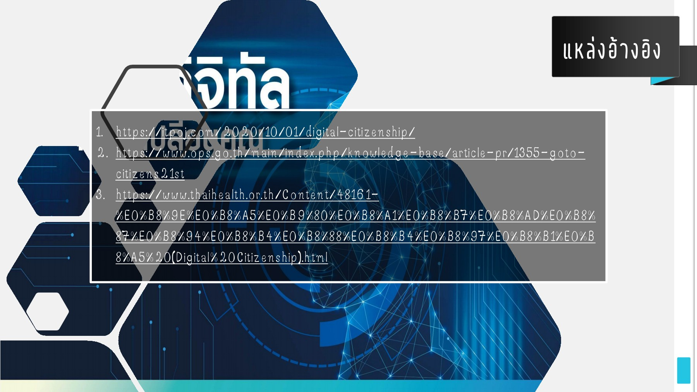
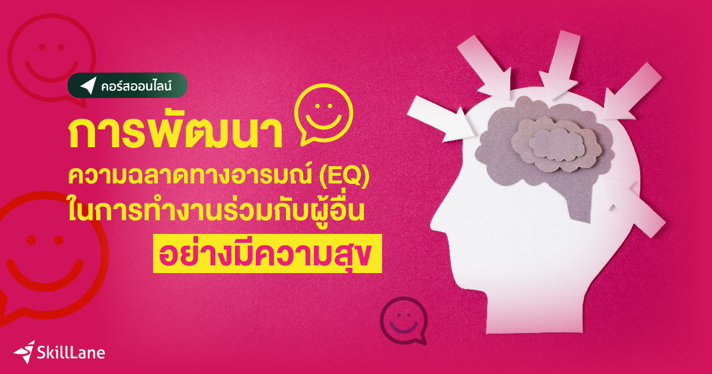
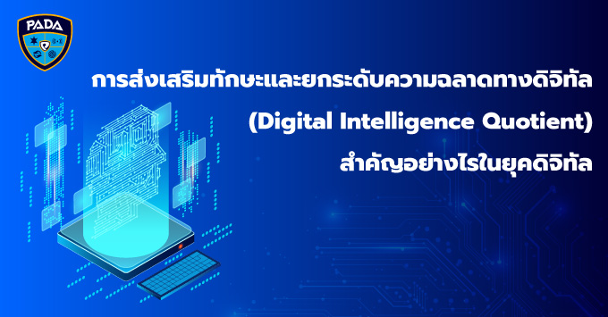

ความเป็นพลเมืองดิจิทัล (Digital Citizenship)
ความเป็นพลเมืองดิจิทัล คือ พลเมืองผู้ใช้งานสื่อดิจิทัลและสื่อสังคมออนไลน์ที่เข้าใจบรรทัดฐานของการปฏิบัติตัวให้เหมาะสมและมีความรับผิดชอบในการใช้เทคโนโลยี โดยเฉพาะอย่างยิ่งการสื่อสารในยุคดิจิทัลเป็นการสื่อสารที่ไร้พรมแดน
สมาชิกของโลกออนไลน์ คือ ทุกคนที่ใช้เครือข่ายอินเทอร์เน็ตบนโลกใบนี้ผู้ใช้สื่อสังคมออนไลน์มีความหลากหลายทางเชื้อชาติ อายุ ภาษา และวัฒนธรรม พลเมืองดิจิทัลจึงต้องเป็นพลเมืองที่มีความรับผิดชอบ มีจริยธรรม เห็นอกเห็นใจและเคารพผู้อื่นการเป็นพลเมืองในยุคดิจิทัลนั้น มีทักษะที่สำคัญ 8 ประการ
1. ทักษะในการรักษาอัตลักษณ์ที่ดีของตนเอง (Digital Citizen Identity) ความสามารถในการสร้างและบริหารจัดการอัตลักษณ์ที่ดีของตนเองไว้ได้อย่างดีทั้งในโลกออนไลน์และโลกความจริง
2. ทักษะในการรักษาข้อมูลส่วนตัว (Privacy Management) มีดุลพินิจในการบริหารจัดการข้อมูลส่วนตัว โดยเฉพาะการแชร์ข้อมูลออนไลน์เพื่อป้องกันความเป็นส่วนตัวทั้งของตนเองและผู้อื่น
3. ทักษะในการคิดวิเคราะห์มีวิจารณญาณที่ดี (Critical Thinking) ความสามารถในการวิเคราะห์แยกแยะระหว่างข้อมูลที่ถูกต้อง และข้อมูลที่ผิด ข้อมูลที่มีเนื้อหาดีและข้อมูลที่เข้าข่ายอันตราย ข้อมูลติดต่อทางออนไลน์ที่น่าตั้งข้อสงสัยและน่าเชื่อถือได้
4. ทักษะในการจัดสรรเวลาหน้าจอ (Screen Time Management) ความสามารถในการบริหารเวลาในการใช้อุปกรณ์ยุคดิจิทัล รวมไปถึงการควบคุมเพื่อให้เกิดสมดุลระหว่างโลกออนไลน์ และโลกภายนอก
5. ทักษะในการรับมือกับการคุกคามทางโลกออนไลน์ (Cyberbullying Management) ความสามารถในการรับรู้ และรับมือการคุกคามข่มขู่บนโลกออนไลน์ได้อย่างชาญฉลาด
6. ทักษะในการบริหารจัดการข้อมูล ที่ผู้ใช้งานมีการทิ้งไว้บนโลกออนไลน์ (Digital Footprints) ความสามารถในการเข้าใจธรรมชาติของการใช้ชีวิตในโลกดิจิทัล
7. ทักษะในการรักษาความปลอดภัยของตนเองในโลกออนไลน์ (Cybersecurity Management) ความสามารถในการป้องกันข้อมูลด้วยการสร้างระบบความปลอดภัยที่เข้มแข็ง
8. ทักษะในการใช้เทคโนโลยีอย่างมีจริยธรรม (Digital Empathy) ความสามารถในการเห็นอกเห็นใจ และสร้างความสัมพันธ์ที่ดีกับผู้อื่นบนโลกออนไลน์
ทำไมต้องฉลาดดิจิทัล
สามารถป้องกันข้อมูลด้วยการสร้างระบบความปลอดภัยที่เข้มแข็ง และป้องกันการโจรกรรมข้อมูล หรือการโจมตีออนไลน์ได้มีทักษะในการรักษาความปลอดภัยของตนเองในโลกออนไลน์การรักษา ความปลอดภัยของตนเองในโลกไซเบอร์ได้
 |